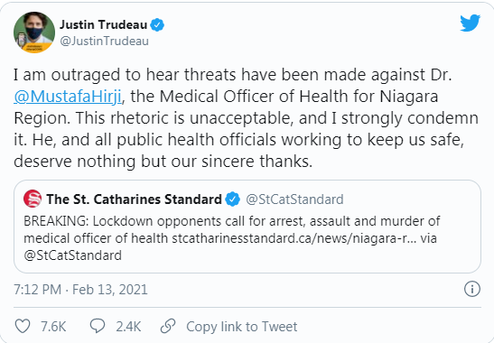
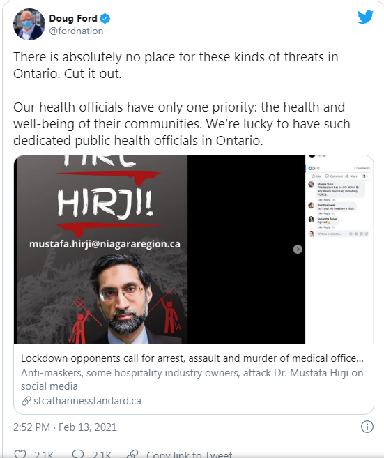
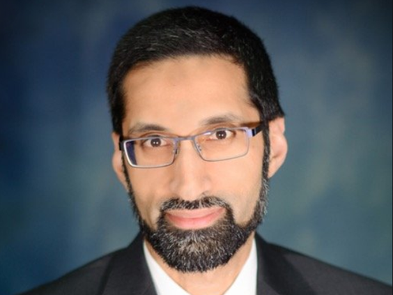
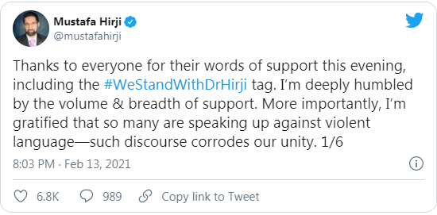
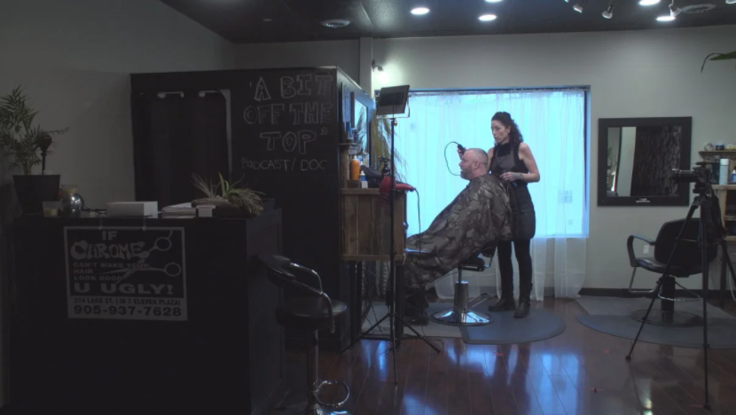
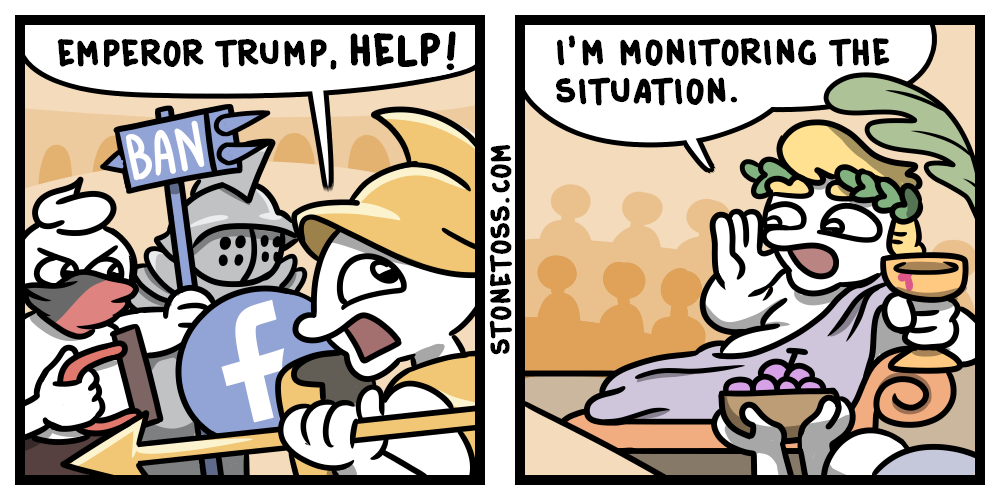
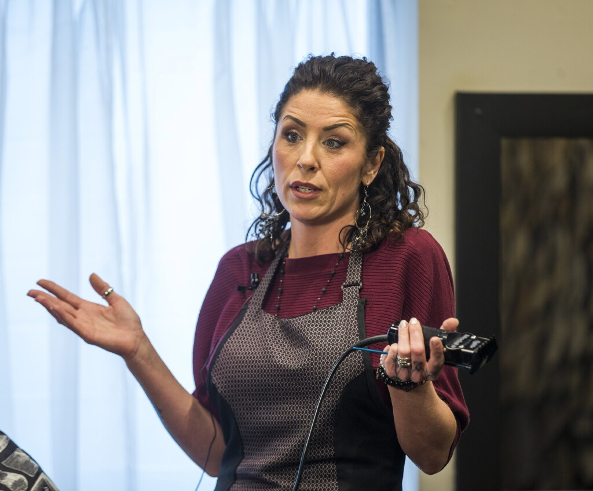

COVID - Brown Government Official Pretends to be Victim
February 15th, 2021
Toronto Sun:
TDC_ARTICLE_START
Threats made against a health official in the Niagara Region have been denounced by Prime Minister Justin Trudeau and Ontario Premier Doug Ford.
In tweets posted on Saturday, Trudeau and Ford spoke out against threats made to Dr. Mustafa Hirji, Niagara’s acting medical officer of health, as the region is slated to remain in the grey lockdown zone while other parts of the province begin to reopen next week.
TDC_ARTICLE_STOP


TDC_ARTICLE_START
The St. Catharines Standard reported threats against Hirji began in response to comments made by Alicia Hirter, the owner of Chrome Artistic Barbering in St. Catharines, who wanted the doctor turfed after her business was fined and shut down for alleged violations of COVID-19 regulations.
The threats intensified on Facebook after it was announced Niagara will remain in lockdown as the region enters the grey zone next week.
“The bastard has to GO NOW. By any means necessary including FORCE,” stated one Facebook user. Another wrote: “Let’s put his head on a stick,” according to the Standard.
Niagara Regional Police stated in a tweet that officers are aware of the threats made on social and an investigation has launched.
TDC_ARTICLE_STOP
Niagara Region's Acting Medical Officer of Health Mustafa Hirji
Check it goy, this is the face of the guy passing the orders that will just happen to destroy numerous small businesses. He's a victim because some of the people who's lives he's destroying on behalf of his employers made obviously unserious statements that the needs to have his head put on a stick.
Remember goy, your oppressors are the real oppressed.

I for one am getting really tired of the whole "Privileged Corporate Shill/Government Official/Billionaire Spokesperson is victim because the peasants they're oppressing didn't have absolutely perfect optics when expressing their frustration with their oppression" schtick.
For those who don't know exactly what prompted this, he's Alicia Hirter's side.
Global News:
TDC_ARTICLE_START
A St. Catharines barbershop owner who created a production studio that also offers haircuts amid Ontario’s COVID-19 lockdown insists her business is “safe” and “sanitary.”
Alicia Hirter, owner of Chrome Artistic Barber, says her storefront now includes cameras, microphones and production lighting in a venture that offers “auditions” for a future podcast or documentary. The idea is to operate as a film or TV set, since those are exempt from Ontario’s lockdown rules.
Alicia Hirter
As creative as her idea might be, her studio operation has caught the attention of regional health authorities, who say they are “monitoring” the situation.
TDC_ARTICLE_STOP

A hilarious meme, but inaccurate in this case. See, Trump said he was "monitoring" things as a way of stringing the goy-peasants along while doing nothing for them. Instead, this monitoring means that the Privileged and Powerful are trying to send a message through their mouthpieces that this peasant is going to be made an example of.
The rest of the article goes into depth into how Alicia Hirter changed her business to make it a film studio, that happened to cut peoples hair on the side. Of course, film studios are allowed to remain open, because they serve the vital service of propaganda production for the Privileged. It is of course completely arbitrary from the perspective of actual Science, but I'm sure some shills could probably explain.
TDC_ARTICLE_START
Hirter says that after an initial inquiry by the city via a phone call, she’s since been visited by a provincial licensing officer who has twice asked her to close her operation.
“The tone was horrible,” Heretser said. “When she was speaking to me, she would interrupt me as soon as I started speaking.”
Ultimately, Hirter says she “stuck her neck out” for a reason and doesn’t regret making the stand to keep her and her son afloat financially.
“The outpouring of support that I got from people across Ontario — business owners, people that were crying to me on the phone, yesterday — I’m beside myself with what’s happened,” she said.
“It’s worth it.”
TDC_ARTICLE_STOP
That article was from January 22nd, 2021. The whole "Government officials are the REAL OPPRESSED, peasant," article was from yesterday, February 14th. Her business was shut down.

Remember goy, this single mother who had her business destroyed and her livelihood destroyed by utterly capricious and arbitrary psuedo-lockdown measures designed to destroy small businesses and put money into the pockets of billionaires, IS THE REAL OPPRESSOR.
Won't somebody think of the Rich Oppressed Billionaire who will have to buy up her property and business for pennies on the dollar? To think that they have to deal with imaginary threats on the internet. God, how do these people survive?